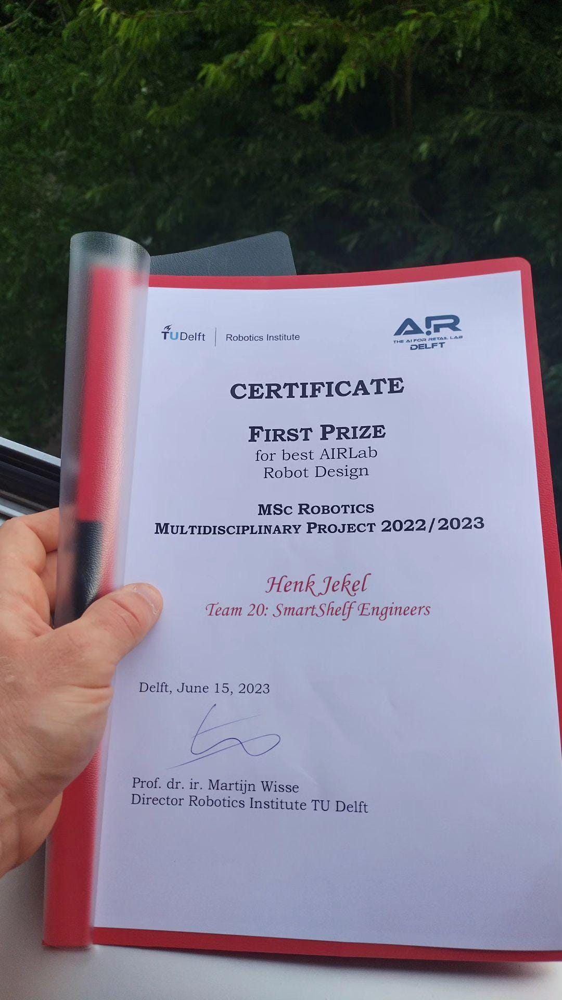

ALBERT: THE NEXT-GEN SUPERMARKET ASSISTANT INTEGRATING ADVANCED AI FOR SEAMLESS IN-STORE AND ONLINE ORDER FULFILLMENT

Project summary
This project aimed to create a comprehensive system for Albert, enabling order picking and assistance in supermarkets. The objective was to equip the robot with the ability to handle orders from both online and in-store customers by selecting the necessary products for them. The system encompasses various capabilities. To interact with customers, the robot utilizes an advanced voice interaction system powered by ChatGPT. This enables the robot to understand and fulfill product requests from in-store customers through voice commands. A user interface has also been implemented in order to select items for orders, meant to simulate orders coming in from online customers. During operation, the robot autonomously identifies, picks, and places products, utilizing the FlexBE system as a state machine to govern its behavior. After completing an order, the robot returns to a base station. Additionally, the robot employs sensors such as lidar, radar, and stereo cameras to detect customers and potential obstacles. By testing the enhanced capabilities of the Albert robot in simulations and real-world scenarios, we have found that the solution can be implemented with a reasonable level of reliability. The robot has successfully demonstrated its ability to pick orders from online customers within a store environment while also providing assistance to in-store customers in a similar manner.
Prize Winners
With this project we won the prize for best robotics project of the Robotics Master Program at TU Delft 2022/2023. 
Project documents
Report:
Presentation:
Canva link presentation MDP group 20Code implementation
Code for this blog:
Code to reproduce the results: